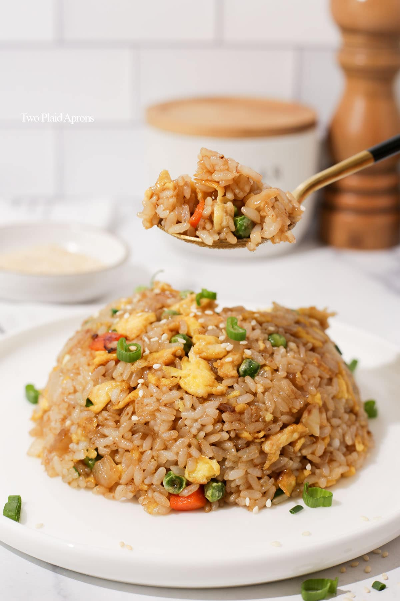

Fried Rice

This is a famous fried rice that mainly available in asian cuisine.
The ingredients that needed to prepare this food is usually simple(based on region)
and can be bought at any nearest supermarket. Also, this dish recipes changes overtime
since peoples have their own preferences.
So what im going to teach today is how to make a fried rice with the simplest recipes that
can be made by everyone that able to cook. So let's get started.
Ingredients
- 100g cold cooked rice.
- Just enough oil.
- Some minced red onions.
- Some minced garlic.
- Some stirred raw eggs.
- A little bit salt.
- A little bit MSG.
- A little bit sugar.
- A half teaspoon of oyster sauce.
Steps
- First and foremost, heat up the pan with oil.
- When the oil is hot enough, toss some minced red onions and garlic.
- Stir until its turns browny and having good smell.
- Next, toss the stirred raw eggs and stir slowly to prevent it from overcooked.
- Then, gracefully toss the rice and mix it up all together.
- When mixing it up, toss the salt, MSG, sugar and the oyster sauce and mix it up again.
- Finally after done mixing, prepare it on a plate neatly.
- Tadaa. You have cooked for yourself a fried rice. Congratulations!.
Return to homepage.